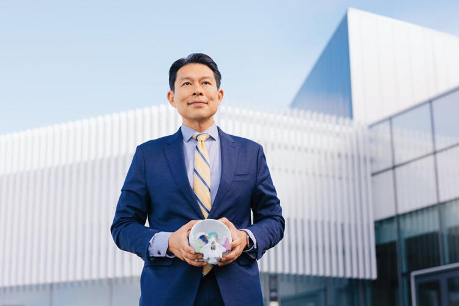

Traditional surgeries for craniofacial differences have been costly, invasive, and often delayed until anatomy reaches near-adult size, placing unnecessary burden on children and their families. FaceShift reduces that burden by making correction available earlier in life.
Clinical Leadership
Dr. Alexander Lin is a pediatric plastic surgeon specializing in craniofacial and maxillofacial surgery, and plastic surgery for pediatric conditions. He is director of surgical innovations for UCSF's plastic surgery division, co-director of the UCSF Craniofacial Center, and co-director of the UCSF Center for Advanced 3D+ Technologies.
His mission is to improve the lives of children and their families. He provides care for patients with cleft lip, cleft palate, craniosynostosis, jaw misalignment, and other craniofacial differences, with a focus on what makes us human: our faces, speech, and hands.
In his research, Lin focuses on 3D printing and advanced visualization to make surgeries faster, more precise, and less invasive. He has funded grants to develop tools for detecting speech problems earlier in children's development, enabling corrective intervention sooner.
After earning his bachelor's and master's at Stanford and his MD at Johns Hopkins, he completed residency at UCSF and a craniofacial, maxillofacial, and pediatric plastic surgery fellowship at Children's Hospital of Pittsburgh. He holds an MBA with a focus on innovation from Washington University in St. Louis.

Dr. Alexander Lin, Co-director of UCSF's Center for Advanced 3D+ Technologies, describes using a 3D model of a young child's skull to prepare for a complex craniofacial repair.
Read more: The Wonderful World of 3D, UCSF Magazine